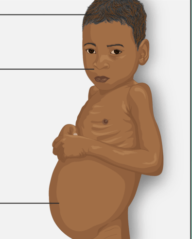
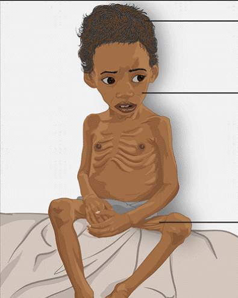

Protein merupakan senyawa makromolekul yang mengandung unsur utama berupa Karbon (C), Hidrogen (H), Oksigen (O) dan Nitrogen (N). Semua protein yang masuk ke dalam tubuh akan dicerna dalam saluran pencernaan menjadi zat yang lebih sederhana yaitu asam amino yang selanjutnya diserap untuk digunakan tubuh. Berikut contoh makanan yang mengandung protein terdapat pada gambar di bawah ini.
Gambar 17 Tempe dan Ayam
Berikut peran protein bagi tubuh antara lain:
- Sebagai sumber energi (1 gram karbohidrat setara dengan 4 kalori)
- Sebagai pembangun sel jaringan tubuh.
- Sebagai pengganti sel tubuh yang rusak
Berdasarkan sumbernya, protein dapat dikelompokkan menjadi dua jenis. Pertama adalah protein hewani yang berasal dari hewan, sedangkan yang kedua yaitu protein nabati yaitu berasal dari tumbuhan. Berikut contohnya:
- Protein hewani : daging sapi, daging ayam, ikan, telur, susu dan keju.
- Protein nabati : tahu, tempe, kacang-kacangan, dan oncom.
Kelebihan protein dalam tubuh dapat mengakibatkan defisiensi kalsium dan osteoporosis. Kekurangan protein juga tidak baik bagi tubuh. Gangguan kekurangan protein biasanya terjadi bersamaan dengan kekurangan karbohidrat. Gangguan tersebut dinamakan busung lapar atau Hunger Oedema (HO). Ada 2 bentuk busung, yaitu:
| Perbedaan | Kwashiokor | Marasmus |
|---|---|---|
| Pengertian | Busung lapar yang diakibatkan oleh kekurangan protein dan zat gizi. | Gizi buruk akibat kurangnya asupan makanan, infeksi, dan bawaan lahir. |
| Ciri-ciri | Badan tampak gemuk, wajah membulat dan sembab, namun otot mengecil, serta bagian perut membesar akibat timbunan cairan. | Berat badan kurang dari 60% sesuai usianya, suhu tubuh rendah, kulit melonggar sehingga tulang tampak hanya terbungkus kulit, tulang rusuk menonjol, berwajag lonjong dan tampak lebih tua. |
| Ilustrasi |  Gambar 18 Kwashiokor |
 Gambar 19 Marasmus |